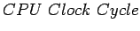
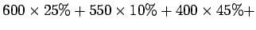
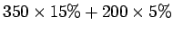
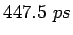

สมมุติให้ส่วนประกอบต่างๆ ของโปรเซสเซอร์มีประสิทธิภาพดังต่อไปนี้
โดยสมมุติให้ส่วนประกอบอื่นได้แก่ Multiplexers, Control Unit, PC Access, Sign Extension, และ สายสัญญาณ ไม่มี Delay จงเปรียบเทียบการออกแบบสร้างโปรเซสเซอร์ดังต่อไปนี้
ในการเปรียบเทียบประสิทธิภาพ เราพิจารณาโปรแกรมที่มีอัตราส่วนของคำสั่ง load 25%, store 10%, ALU instruction 45%, branch 15%, และ jumps 5%
การเปรียบเทียบประสิทธิภาพ เปรียบเทียบจากเวลาที่ใช้ในการประมวลผล โดยใช้สมการ
| (5.1) |
เนื่องจาก CPI มีค่าเท่ากับ 1 เราสามารถหาจัดรูปสมการได้ดังนี้
| (5.2) |
ในคำสั่งรูปแบบต่างๆ มีการใชังานส่วนประกอบของโปรเซสเซอร์ดังนี้
| Instruction | |||||
| class | Functional units used by the instruction class | ||||
| R-Type | Inst. Fetch | Register Access | ALU | Register Access | |
| Load word | Inst. Fetch | Register Access | ALU | Memory Access | Register Access |
| Store word | Inst. Fetch | Register Access | ALU | Memory Access | |
| Branch | Inst. Fetch | Register Access | ALU | ||
| Jump | Inst. Fetch | ||||
โดยสามารถคำนวณเวลาในการประมวลผลได้ดังนี้
| Instruction | Instruction | Register | ALU | Data | Register | |
| class | memory | read | operation | memory | write | Total |
| R-Type | 200 | 50 | 100 | 0 | 50 | 400 ps |
| Load word | 200 | 50 | 100 | 200 | 50 | 600 ps |
| Store word | 200 | 50 | 100 | 200 | 550 ps | |
| Branch | 200 | 50 | 100 | 0 | 350 ps | |
| Jump | 200 | 200ps | ||||
ฉะนั้นจะสามารถคำนวณเวลาเฉลี่ยต่อคำสั่งจะเท่ากับ
|  |  | (5.3) | |
|  | (5.4) | ||
|  |
โดยจะได้อัตราส่วนของประสิทธิภาพเท่ากับ
| (5.5) |
โดยโปรเซสเซอร์แบบปรับวงรอบการทำงานสัญญาณนาฬิกามีความเร็วกว่า 1.34 เท่า แต่การออกแบบสร้างโปรเซสเซอร์ในลักษณะดังกล่าวทำได้ยากมาก